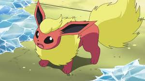
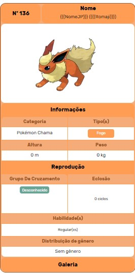

Flareon, o quente
Flareon (em Japonês:ブースター Booster) e um Pokémon do tipo Fogo introduzido na primera geração. é uma das evoluções posiveis do Eevee.
Flareon tem um pelo longo, suave como o algodão, o que o torna um Pokémon muito especial para competições, onde seus treinadores trazem à tona sua beleza máxima. Seu corpo e predominatemente vermelho com seus pelos na cabeça no pescoço e na caulda sendo amarelos.
Diferenças de Genero
Não ha diferenças de genero no Flareon
Pokédex
As chamas que ele dispara são tão quentes que podem chegar a mais de 1600 °C. Sua temperatura corporal ultrapassa os 800 °C. Ele afofa sua pelugem com a temperatura do corpo
